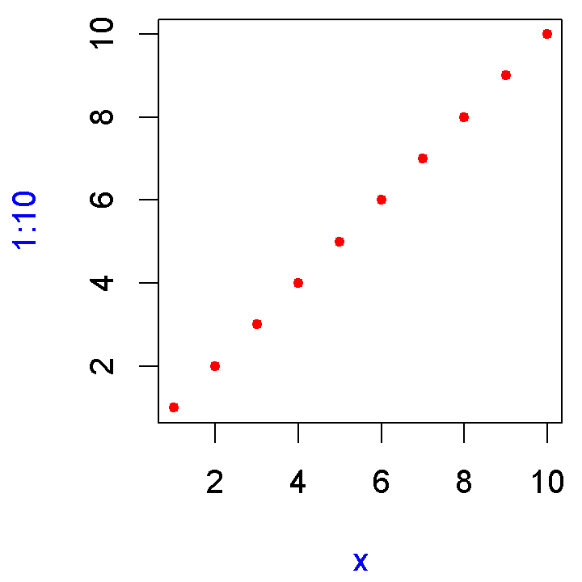
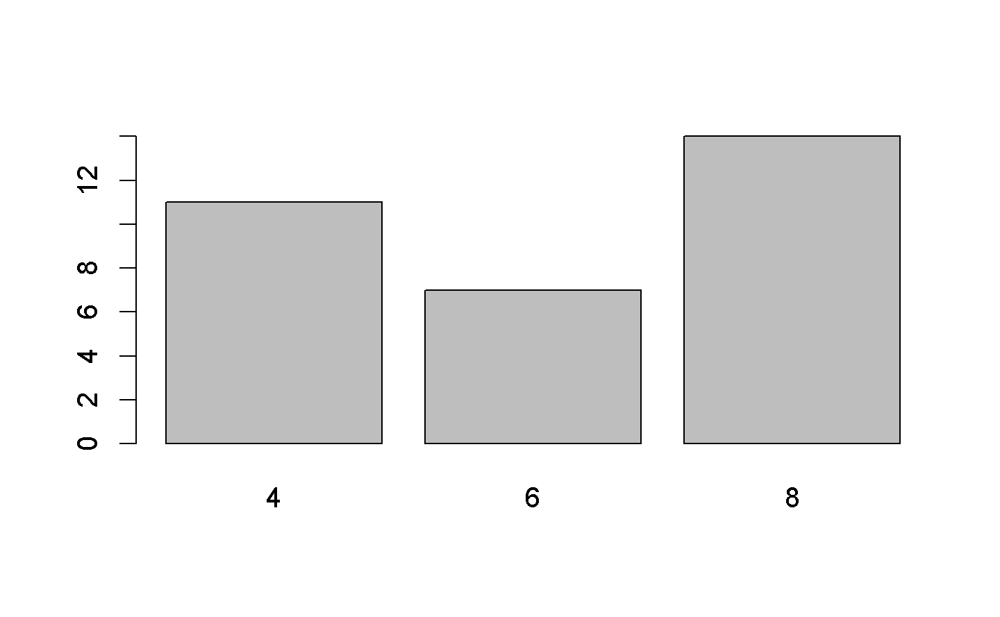
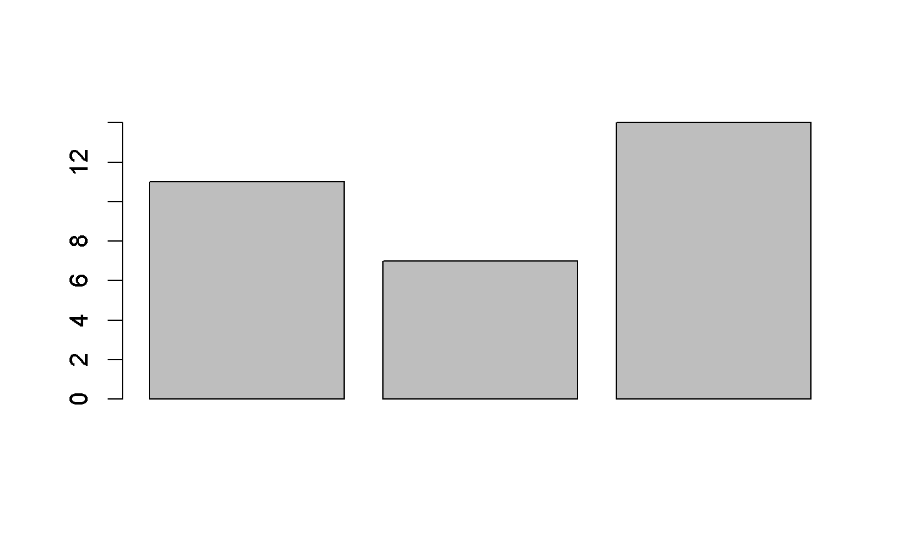
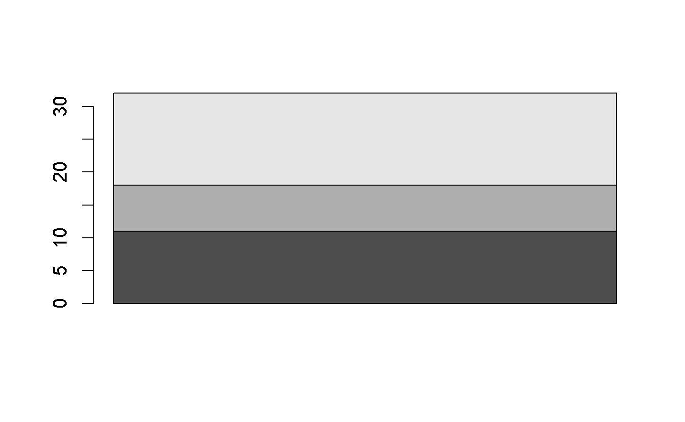
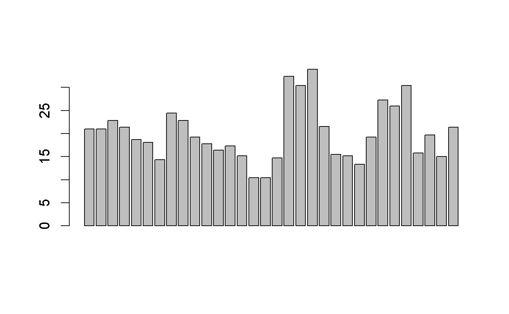
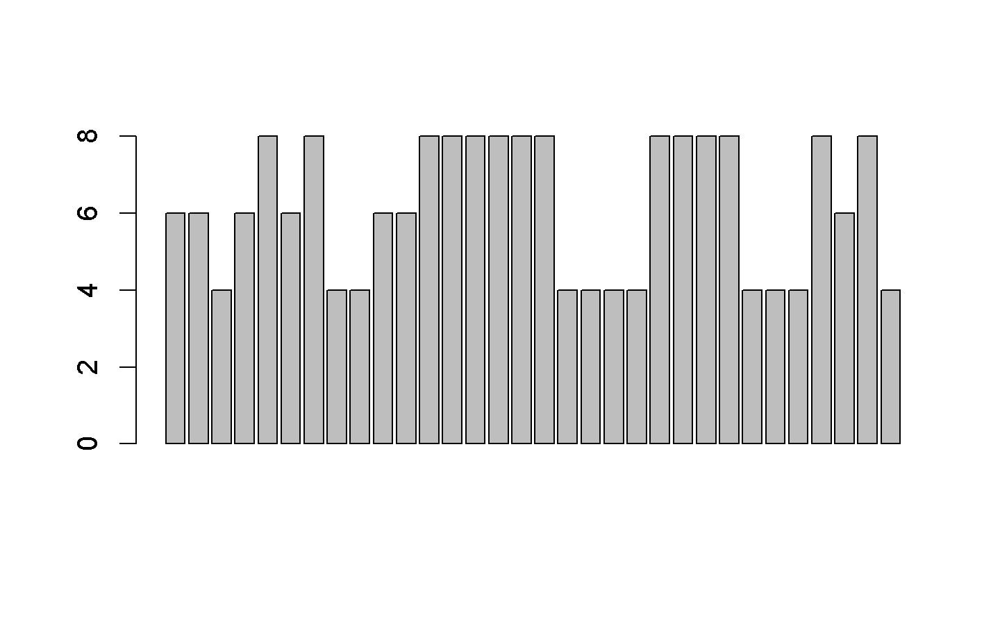

Chapter 3 Functions
3.1 Introduction
簡單測試 ### Quiz {-}
Answer the following questions to see if you can safely skip this chapter. You can find the answers in ??.
What are the three components of a function?
What does the following code return?
How would you usually write this code?
How could you make this call easier to read?
Does the following code throw an error when executed? Why/why not?
What is an infix function? How do you write it? What’s a replacement function? How do you write it?
How do you ensure that cleanup action occurs regardless of how a function exits?
Outline
Section 3.2 describes the basics of creating a function, the three main components of a function, and the exception to many function rules: primitive functions (which are implemented in C, not R).
Section 3.3 shows you how R finds the value associated with a given name, i.e. the rules of lexical scoping.
Section 3.4 is devoted to an important property of function arguments: they are only evaluated when used for the first time.
Section 3.6 discusses the two primary ways that a function can exit, and how to define an exit handler, code that is run on exit, regardless of what triggers it.
Section 3.7 shows you the various ways in which R disguises ordinary function calls, and how you can use the standard prefix form to better understand what’s going on.
3.2 Function fundamentals
幾個重要觀念
函數也是物件,就像是vectors 也是物件。
由三個部份組成: arguments, body, and environment.
There are exceptions to every rule, and in this case, there is a small selection of “primitive” base functions that are implemented purely in C.
3.2.1 First-class functions
在R中,函數也是物件,這種特性也叫做 “first-class functions”. 如下:

匿名函數:
lapply(mtcars, function(x) length(unique(x)))
Filter(function(x) !is.numeric(x), mtcars)
integrate(function(x) sin(x) ^ 2, 0, pi)在list中,也可以放入:
在R語言中,函數有叫做closure因為,R函數包含(enclose)它們的環境 environments.
3.2.2 Function components
1個函數有3個部分:
formals(), 參數body(), {}內部.environment(), 決定函數怎樣找出變數(names)的內容。.
I’ll draw functions as in the following diagram. The black dot on the left is the environment. The two blocks to the right are the function arguments. I won’t draw the body, because it’s usually large, and doesn’t help you understand the “shape” of the function.

The function environment always exists, but it is only printed when the function isn’t defined in the global environment.
f02 <- function(x) {
# A comment
x ^ 2
}
formals(f02)
#> $x
body(f02)
#> {
#> x^2
#> }
environment(f02)
#> <environment: R_GlobalEnv>就像所以其他R的物件,函數也有很多 attributes(). 其中一個 “srcref”, 是 source reference的縮寫。
3.2.3 Primitive functions
３個組件的規則有例外，像是 Primitive functions, like sum() and [, 直接調用Ｃ語言。
看一下type 分別屬於 “builtin” or “special”:
因此， formals(), body(), and environment() 都回傳 NULL:
這些所謂的原始函數，只存在於基本套件(base packages) 。.
3.2.4 Exercises
Given a function, like
"mean",match.fun()lets you find a function. Given a function, can you find its name? Why doesn’t that make sense in R?It’s possible (although typically not useful) to call an anonymous function. Which of the two approaches below is correct? Why?
A good rule of thumb is that an anonymous function should fit on one line and shouldn’t need to use
{}. Review your code. Where could you have used an anonymous function instead of a named function? Where should you have used a named function instead of an anonymous function?What function allows you to tell if an object is a function? What function allows you to tell if a function is a primitive function?
This code makes a list of all functions in the base package.
Use it to answer the following questions:
Which base function has the most arguments?
How many base functions have no arguments? What’s special about those functions?
How could you adapt the code to find all primitive functions?
What are the three important components of a function?
When does printing a function not show the environment it was created in?
3.3 Lexical scoping
In [Names and values], we discussed assignment, the act of binding a name to a value. Here we’ll discuss scoping, the act of finding the value associated with a name.
下面的執行結果傳回10還是20?1
了解範圍規則,有助於函數的模組開發,甚至有助於將R翻譯到其他語言。
lexical scoping 2: it looks up the values of names based on how a function is defined, not how it is called. “Lexical” here is not the English adjective “relating to words or a vocabulary”. It’s a technical CS term that tells us that the scoping rules use a parse-time, rather than a run-time structure.
R的’s lexical scoping 遵循4個主要規則::
- Name masking
- Functions vs. variables
- A fresh start
- Dynamic lookup
3.3.1 Name masking
內部範圍的宣告(第一次使用)覆蓋外部範圍的宣告。.
如果在內部宣告找不到,就找外一層，一直到global environment。
上面的規則仍然適用於函數中的函數.
測試:下面的R程式會有甚麼結果 ? 3
同樣也適用於建立函數的函數( closures).參考 [closures]; 這裡只是用來說明上述規則的使用。 g05(), 傳回函數,猜猜執行結果?4
This seems a little magical: how does R know what the value of y is after j() has returned? It works because k preserves the environment in which it was defined and because the environment includes the value of y. You’ll learn more about how environments work in Environments.
3.3.2 Functions vs. variables
既然函數也只是普通的物件,那麼同樣的名稱尋找規則也適用於函數:這個例子中,g07在外部和內部皆有定義。
但是如果同一個名稱,在不同範圍有不一樣的型態呢?例如g9一個是變數,一個是函數:
一般來講,上面的用法在語法上是沒問題,但是最好避免。
3.3.3 A fresh start
第一次執行和第二次執行有甚麼不同?5
函數 exists(x) :會尋找變數名稱x是否存在,存在則無回 TRUE,否則傳回 FALSE.)
每次執行的時候,一個新的environment會被建立,用來主導函數的執行。 ??.)
3.3.4 Dynamic lookup
Lexical scoping determines where to look for values, not when to look for them. R looks for values when the function is run, not when it’s created. This means that the output of a function can differ depending on objects outside its environment:
This behaviour can be quite annoying. If you make a spelling mistake in your code, you won’t get an error when you create the function, and you might not even get one when you run the function, depending on what variables are defined in the global environment.
One way to detect this problem is to use codetools::findGlobals(). This function lists all the external dependencies (unbound symbols) within a function:
Another way to solve the problem would be to manually change the environment of the function to the emptyenv(), an environment which contains nothing:
Both of these approaches reveal why this undesirable behaviour exists: R relies on lexical scoping to find everything, even the + operator. This provides a rather beautiful simplicity to R’s scoping rules.
3.3.5 Exercises
What does the following code return? Why? Describe how each of the three
c’s is interpreted.What are the four principles that govern how R looks for values?
What does the following function return? Make a prediction before running the code yourself.
3.4 Lazy evaluation
In R, function arguments are lazily evaluated: they’re only evaluated if accessed. For example, this code doesn’t generate an error because x is never used:
This is an important feature because it allows you to do things like include potentially expensive computations in function arguments that will only be evaluated if needed.
3.4.1 Forcing evaluation
To compel the evaluation of an argument, use force():
h02 <- function(x) {
force(x)
10
}
h02(stop("This is an error!"))
#> Error in force(x):
#> This is an error!It is usually not necessary to force evaluation. It’s needed primarily for certain functional programming techniques which we’ll cover in detail in [function operators]. Here, I want to show you the basic issue.
Take this small but surprisingly tricky function. It takes a single argument x, and returns a function that returns x when called.
There’s a subtle issue with this function: the value of x will be captured not when you call capture(), but when you call the function that capture() returns:
Even more confusingly this only happens once: the value is locked in after you have called h03()/h04() for the first time.
This behaviour is a consequence of lazy evaluation. The x argument is evaluated once h03()/h04() is called, and then its value is cached. We can avoid the confusion by forcing x:
3.4.2 Promises
}
Lazy evaluation is powered by a data structure called a promise, or (less commonly) a thunk. We’ll come back to this data structure in metaprogramming because it’s one of the features of R that makes it most interesting as a programming language.
A promise has three components:
The expression, like
x + ywhich gives rise to the delayed computation.The environment where the expression should be evaluated.
The value, which is computed and cached when the promise is first accessed by evaluating the expression in the specified environment.
The value cache ensures that accessing the promise multiple times always returns the same value. For example, you can see in the following code that runif(1) is only evaluated once:
You can also create promises “by hand” using delayedAssign():
delayedAssign("x", {print("Executing code"); runif(1)})
x
#> [1] "Executing code"
#> [1] 0.834
x
#> [1] 0.834You’ll see this idea again in advanced bindings.
3.4.3 Default arguments
Thanks to lazy evaluation, default value can be defined in terms of other arguments, or even in terms of variables defined later in the function:
Many base R functions use this technique, but I don’t recommend it. It makes code harder to understand because it requires that you know exactly when default arguments are evaluated in order to predict what they will evaluate to.
The evaluation environment is slightly different for default and user supplied arguments, as default arguments are evaluated inside the function. This means that seemingly identical calls can yield different results. It’s easiest to see this with an extreme example:
3.4.4 Missing arguments
If an argument has a default, you can determine if the value comes from the user or the default with missing():
h09 <- function(x = 10) {
list(missing(x), x)
}
str(h09())
#> List of 2
#> $ : logi TRUE
#> $ : num 10
str(h09(10))
#> List of 2
#> $ : logi FALSE
#> $ : num 10missing() is best used sparingly. Take sample(), for example. How many arguments are required?
It looks like both x and size are required, but in fact sample() uses missing() to provide a default for size if it’s not supplied. If I was to rewrite sample myself6, I’d use an explicit NULL to indicate that size can be supplied, but it’s not required:
sample <- function(x, size = NULL, replace = FALSE, prob = NULL) {
if (is.null(size)) {
size <- length(x)
}
x[sample.int(length(x), size, replace = replace, prob = prob)]
}You can make that pattern even simpler with a small helper. The infix %||% function uses the LHS if it’s not null, otherwise it uses the RHS:
`%||%` <- function(lhs, rhs) {
if (!is.null(lhs)) {
lhs
} else {
rhs
}
}
sample <- function(x, size = NULL, replace = FALSE, prob = NULL) {
size <- size %||% length(x)
x[sample.int(length(x), size, replace = replace, prob = prob)]
}Because of lazy evaluation, you don’t need to worry about unnecessary computation: the RHS of %||% will only be evaluated if the LHS is null.
3.4.5 Exercises
What important property of
&&makex_ok()work?x_ok <- function(x) { !is.null(x) && length(x) == 1 && x > 0 } x_ok(NULL) #> [1] FALSE x_ok(1) #> [1] TRUE x_ok(1:3) #> [1] FALSEWhat is different with this code? Why is this behaviour undesirable here?
The definition of
force()is simple:Why is it better to
force(x)instead of justx?What does this function return? Why? Which principle does it illustrate?
What does this function return? Why? Which principle does it illustrate?
In
hist(), the default value ofxlimisrange(breaks), the default value forbreaksis"Sturges", andExplain how
hist()works to get a correctxlimvalue.Explain why this function works. Why is it confusing?
How many arguments are required when calling
library()?
3.5 ... (dot-dot-dot)
Functions can have a special argument ... (pronounced dot-dot-dot). If a function has this argument, it can take any number of additional arguments. In other programming languages, this type of argument is often called a varargs, or the function is said to be variadic.
Inside a function, you can use ... to pass those additional arguments on to another function:
i01 <- function(y, z) {
list(y = y, z = z)
}
i02 <- function(x, ...) {
i01(...)
}
str(i02(x = 1, y = 2, z = 3))
#> List of 2
#> $ y: num 2
#> $ z: num 3It’s possible (but rarely useful) to refer to elements of ... by their position, using a special form:
i03 <- function(...) {
list(first = ..1, third = ..3)
}
str(i03(1, 2, 3))
#> List of 2
#> $ first: num 1
#> $ third: num 3More often useful is list(...), which evaluates the arguments and stores them in a list:
(See also rlang::list2() to support splicing and to silently ignore trailing commas, and rlang::enquos() to capture the unevaluated arguments, the topic of [quasiquotation].)
There are two primary uses of ..., both of which we’ll come back to later in the book:
If your function takes a function as an argument, you want some way to pass on additional arguments to that function. In this example,
lapply()uses...to passna.rmon tomean():x <- list(c(1, 3, NA), c(4, NA, 6)) str(lapply(x, mean, na.rm = TRUE)) #> List of 2 #> $ : num 2 #> $ : num 5We’ll come back to this technique in Section ??.
If your function is an S3 generic, you need some way to allow methods to take arbitrary extra arguments. For example, take the
print()function. There are different options for printing types of object, so there’s no way for the print generic to prespecify every possible argument. Instead, it uses...to allow individual methods to have different arguments:We’ll come back to this use of
...in Section ??.
Using ... comes with two downsides:
When you use it to pass arguments on to another function, you have to carefully explain to the user where those arguments go. This makes it hard to understand the what you can do with functions like
lapply()andplot().Any misspelled arguments will not raise an error. This makes it easy for typos to go unnoticed:
... is a powerful tool, but be aware of the downsides.
3.5.1 Exercises
Explain the following results:
In the following call, explain how to find the documentation for the named arguments in the following function call:

Why does
plot(1:10, col = "red")only colour the points, not the axes or labels? Read the source code ofplot.default()to find out.
3.6 Exiting a function
Most functions exit in one of two ways7: either returning a value, indicating successful completion, or throwing an error, indicating failure. This section describes return values (implicit vs. explicit; visible vs. invisible), briefly discusses errors, and introduces exit handlers, which allow you to run code when a function exits, regardless of how it exits.
3.6.1 Implicit vs. explict returns
There are two ways that a function can return a value:
Implicitly, where the last evaluated expression becomes the return value:
Explicitly, by calling
return():
3.6.2 Invisible values
Most functions return visibly: calling the function in an interactive context causes the result to be automatically printed.
However, it’s also possible to return an invisible() value, which is not automatically printed.
You can verify that the value exists either by explicitly printing it or by wrapping in parentheses:
Alternatively, use withVisible() to return the value and a visibility flag:
The most common function that returns invisibly is <-:
And this is what makes it possible to chain assignment:
In general, any function called primarily for its side effects (like <-, print(), or plot()) should return an invisible value (typically the value of the first argument).
3.6.3 Errors
If a function can not complete its assigned task, it should throw an error with stop(), which immediately terminates the execution of the function.
Errors indicate that something has gone wrong, and force the user to handle them. Some languages (like C, go, and rust) rely on special return values to indicate problems, but in R you should always throw an error. You’ll learn more about errors, and how to handle them, in [Conditions].
3.6.4 Exit handlers
Sometimes a function needs to make a temporary change to global state and you want to ensure those changes are restored when the function completes. It’s painful to make sure you cleanup before any explicit return, and what happens if there’s an error? Instead, you can set up an exiting handler that is called when the function terminates, regardless of whether it returns a value or throws an error.
To setup an exiting handler, call on.exit() with the code to be run. It will execute when the function exits, regardless of what causes it to exit:
j06 <- function(x) {
cat("Hello\n")
on.exit(cat("Goodbye!\n"), add = TRUE)
if (x) {
return(10)
} else {
stop("Error")
}
}
f(TRUE)
#> [1] 4
f(FALSE)
#> [1] 2on.exit() is important because it allows you to place clean-up actions next to actions with their cleanup operations.
cleanup <- function(dir, code) {
old_dir <- setwd(dir)
on.exit(setwd(old), add = TRUE)
old_opt <- options(stringsAsFactors = FALSE)
on.exit(options(old_opt), add = TRUE)
}When coupled with lazy evaluation, this leads to a very useful pattern for running a block of code in an altered environment:
with_dir <- function(dir, code) {
old <- setwd(dir)
on.exit(setwd(old), add = TRUE)
force(code)
}
getwd()
#> [1] "D:/RStudio/mybook"
with_dir("~", getwd())
#> [1] "C:/Users/linchao/Documents"See the withr package for a collection of functions of this nature.
In R 3.4 and prior, on.exit() expressions are always run in the order in which they are created:
f <- function() {
on.exit(message("a"), add = TRUE)
on.exit(message("b"), add = TRUE)
}
f()
#> a
#> bThis can make cleanup a little tricky if some actions need to happen in a specific order; typically you want the most recent added expression to be run first. In R 3.5 and later, you can control this by setting after = FALSE:
3.6.5 Exercises
What does
load()return? Why don’t you normally see these values?What does
write.table()return? What would be more useful?How does the
chdirparameter ofsource()compare toin_dir()? Why might you prefer one approach to the other?Write a function that opens a graphics device, runs the supplied code, and closes the graphics device (always, regardless of whether or not the plotting code worked).
We can use
on.exit()to implement a simple version ofcapture.output().capture.output2 <- function(code) { temp <- tempfile() on.exit(file.remove(temp), add = TRUE, after = TRUE) sink(temp) on.exit(sink(), add = TRUE, after = TRUE) force(code) readLines(temp) } capture.output2(cat("a", "b", "c", sep = "\n")) #> Warning in file.remove(temp): cannot remove file 'C: #> \Users\linchao\AppData\Local\Temp\RtmpmqqlIO\file2dd7419542650', reason #> 'Permission denied' #> [1] "a" "b" "c"Compare
capture.output()tocapture.output2(). How do the functions differ? What features have I removed to make the key ideas easier to see? How have I rewritten the key ideas to be easier to understand?
3.7 Function forms
"To understand computations in R, two slogans are helpful:
- Everything that exists is an object.
- Everything that happens is a function call."
— John Chambers
While everything that happens in R is a result of a function call, not all calls look the same. Function calls come in four varieties:
In prefix form, the function name comes before its arguments, like
foofy(a, b, c). These constitute of the majority of function calls in R.In infix form, the function name comes inbetween its arguments, like
x + y. Infix forms are used for many mathematical operators, as well as user-defined functions that begin and end with%.A replacement function assigns into what looks like a prefix function, like
names(df) <- c("a", "b", "c").Special forms like
[[,if, andfor, don’t have a consistent structure and provide some of the most important syntax in R.
While four forms exist, you only need to use one, because any call can be written in prefix form. I’ll demonstrate this property, and then you’ll learn about each of the forms in turn.
3.7.1 Rewriting to prefix form
}}
An interesting property of R is every infix, replacement, or special form can be rewritten in prefix form. Rewriting in prefix form is useful because it helps you better understand the structure of the language, and it gives you the real name of every function. Knowing the real name of non-prefix functions is useful because it allows you to modify them for fun and profit.
The following example shows three pairs of equivalent calls, rewriting an infix form, replacement form, and a special form into prefix form.
x + y
`+`(x, y)
names(df) <- c("x", "y", "z")
`names<-`(df, c("x", "y", "z"))
for(i in 1:10) print(i)
`for`(i, 1:10, print(i))Knowing the function name of a non-prefix function allows you to override its behaviour. For example, if you’re ever feeling particularly evil, run the following code while a friend is away from their computer. It will introduce a fun bug: 10% of the time, 1 will be added to any numeric calculation inside of parentheses.
`(` <- function(e1) {
if (is.numeric(e1) && runif(1) < 0.1) {
e1 + 1
} else {
e1
}
}
replicate(50, (1 + 2))
#> [1] 3 3 4 3 3 3 3 3 3 3 4 3 3 3 3 4 3 3 3 3 3 3 3 3 4 3 3 3 4 3 3 3 3 3 3
#> [36] 3 3 3 3 3 3 3 4 3 3 3 3 3 3 3
rm("(")Of course, overriding built-in functions like this is a bad idea, but, as you’ll learn about in [metaprogramming], it’s possible to apply it only to selected code blocks. This provides a clean and elegant approach to writing domain specific languages and translators to other languages.
A more useful technique is to use this knowledge when using functional programming tools. For example, you could use sapply() to add 3 to every element of a list by first defining a function add(), like this:
But we can also get the same effect more simply by relying on the existing + function:
We’ll explore this idea in detail in [functionals].
3.7.2 Prefix form {prefix-form}
The prefix form is the most common form in R code, and indeed in the majority of programming languages. Prefix calls in R are a little special because you can specify arguments in three ways:
- By position, like
help(mean). - Using partial matching, like
help(to = mean). - By name, like
help(topic = mean).
As illustrated by the following chunk, arguments are matched by exact name, then with unique prefixes, and finally by position.
k01 <- function(abcdef, bcde1, bcde2) {
list(a = abcdef, b1 = bcde1, b2 = bcde2)
}
str(k01(1, 2, 3))
#> List of 3
#> $ a : num 1
#> $ b1: num 2
#> $ b2: num 3
str(k01(2, 3, abcdef = 1))
#> List of 3
#> $ a : num 1
#> $ b1: num 2
#> $ b2: num 3
# Can abbreviate long argument names:
str(k01(2, 3, a = 1))
#> List of 3
#> $ a : num 1
#> $ b1: num 2
#> $ b2: num 3
# But this doesn't work because abbreviation is ambiguous
str(k01(1, 3, b = 1))
#> Error in k01(1, 3, b = 1):
#> argument 3 matches multiple formal argumentsGenerally, only use positional matching for the first one or two arguments; they will be the most commonly used, and most readers will know what they are. Avoid using positional matching for less commonly used arguments, and never use partial matching. See the tidyverse style guide, http://style.tidyverse.org/syntax.html#argument-names, for more advice.
3.7.3 Infix functions
Infix functions are so called because the function name comes inbetween its arguments, and hence infix functions have two arguments. R comes with a number of built-in infix operators: :, ::, :::, $, @, ^, *, /, +, -, >, >=, <, <=, ==, !=, !, &, &&, |, ||, ~, <-, and <<-. You can also create your own infix functions that start and end with %, and base R uses this to additionally define %%, %*%, %/%, %in%, %o%, and %x%.
Defining your own infix function is simple. You create a two argument function and bind it to a name that starts and ends with %:
The names of infix functions are more flexible than regular R functions: they can contain any sequence of characters except “%”. You will need to escape any special characters in the string used to define the function, but not when you call it:
`% %` <- function(a, b) paste(a, b)
`%/\\%` <- function(a, b) paste(a, b)
"a" % % "b"
#> [1] "a b"
"a" %/\% "b"
#> [1] "a b"R’s default precedence rules mean that infix operators are composed from left to right:
`%-%` <- function(a, b) paste0("(", a, " %-% ", b, ")")
"a" %-% "b" %-% "c"
#> [1] "((a %-% b) %-% c)"There are two special infix functions that can be called with a single argument: + and -.
3.7.4 Replacement functions
Replacement functions act like they modify their arguments in place, and have the special name xxx<-. They must have arguments named x and value, and must return the modified object. For example, the following function allows you to modify the second element of a vector:
Replacement functions are used by placing the function call on the LHS of <-:
I say they “act” like they modify their arguments in place, because, as discussed in [Modify-in-place], they actually create a modified copy. We can see that by using tracemem():
x <- 1:10
tracemem(x)
#> <0x7ffae71bd880>
second(x) <- 6L
#> tracemem[0x7ffae71bd880 -> 0x7ffae61b5480]:
#> tracemem[0x7ffae61b5480 -> 0x7ffae73f0408]: second<- If you want to supply additional arguments, they go inbetween x and value:
`modify<-` <- function(x, position, value) {
x[position] <- value
x
}
modify(x, 1) <- 10
x
#> [1] 10 5 3 4 5 6 7 8 9 10When you write modify(x, 1) <- 10, behind the scenes R turns it into:
Combining replacement with other functions requires more complex translation. For example, this:
x <- c(a = 1, b = 2, c = 3)
names(x)
#> [1] "a" "b" "c"
names(x)[2] <- "two"
names(x)
#> [1] "a" "two" "c"Is translated into:
(Yes, it really does create a local variable named tmp, which is removed afterwards.)
3.7.5 Special forms
Finally, there are a bunch of language features that are usually written in special ways, but also have prefix forms. These include parentheses:
(x)(`(`(x)){x}(`{`(x)).
The subsetting operators:
x[i](`[`(x, i))x[[i]](`[[`(x, i))
And the tools of control flow:
if (cond) true(`if`(cond, true))if (cond) true else false(`if`(cond, true, false))for(var in seq) action(`for`(var, seq, action))while(cond) action(`while`(cond, action))repeat expr(`repeat`(expr))next(`next`())break(`break`())
Finally, the most complex is the “function” function:
function(arg1, arg2) {body}(`function`(alist(arg1, arg2), body, env))
Knowing the name of the function that underlies the special form is useful for getting documentation. ?( is a syntax error; ?`(` will give you the documentation for parentheses.
Note that all special forms are implemented as primitive functions (i.e. in C); that means printing these functions is not informative:
3.8 Invoking a function
Suppose you had a list of function arguments:
How could you then send that list to mean()? In base R, you need do.call():
3.8.1 Exercises
Rewrite the following code snippets into prefix form:
Clarify the following list of odd function calls:
Explain why the following code fails:
Create a replacement function that modifies a random location in a vector.
Write your own version of
+that will paste its inputs together if they are character vectors but behaves as usual otherwise. In other words, make this code work:Create a list of all the replacement functions found in the base package. Which ones are primitive functions? (Hint use
apropros())What are valid names for user-created infix functions?
Create an infix
xor()operator.Create infix versions of the set functions
intersect(),union(), andsetdiff(). You might call them%n%,%u%, and%/%to match conventions from mathematics.
3.9 Quiz answers
The three components of a function are its body, arguments, and environment.
f1(1)()returns 11.You’d normally write it in infix style:
1 + (2 * 3).Rewriting the call to
mean(c(1:10, NA), na.rm = TRUE)is easier to understand.No, it does not throw an error because the second argument is never used so it’s never evaluated.
See infix and replacement functions.
You use
on.exit(); see on exit for details.
3.10 quick view
測試資料
可以先看看資料描述 ?mtcars
mtcars
#> mpg cyl disp hp drat wt qsec vs am gear carb
#> Mazda RX4 21.0 6 160.0 110 3.90 2.62 16.5 0 1 4 4
#> Mazda RX4 Wag 21.0 6 160.0 110 3.90 2.88 17.0 0 1 4 4
#> Datsun 710 22.8 4 108.0 93 3.85 2.32 18.6 1 1 4 1
#> Hornet 4 Drive 21.4 6 258.0 110 3.08 3.21 19.4 1 0 3 1
#> Hornet Sportabout 18.7 8 360.0 175 3.15 3.44 17.0 0 0 3 2
#> Valiant 18.1 6 225.0 105 2.76 3.46 20.2 1 0 3 1
#> Duster 360 14.3 8 360.0 245 3.21 3.57 15.8 0 0 3 4
#> Merc 240D 24.4 4 146.7 62 3.69 3.19 20.0 1 0 4 2
#> Merc 230 22.8 4 140.8 95 3.92 3.15 22.9 1 0 4 2
#> Merc 280 19.2 6 167.6 123 3.92 3.44 18.3 1 0 4 4
#> Merc 280C 17.8 6 167.6 123 3.92 3.44 18.9 1 0 4 4
#> Merc 450SE 16.4 8 275.8 180 3.07 4.07 17.4 0 0 3 3
#> Merc 450SL 17.3 8 275.8 180 3.07 3.73 17.6 0 0 3 3
#> Merc 450SLC 15.2 8 275.8 180 3.07 3.78 18.0 0 0 3 3
#> Cadillac Fleetwood 10.4 8 472.0 205 2.93 5.25 18.0 0 0 3 4
#> Lincoln Continental 10.4 8 460.0 215 3.00 5.42 17.8 0 0 3 4
#> Chrysler Imperial 14.7 8 440.0 230 3.23 5.34 17.4 0 0 3 4
#> Fiat 128 32.4 4 78.7 66 4.08 2.20 19.5 1 1 4 1
#> Honda Civic 30.4 4 75.7 52 4.93 1.61 18.5 1 1 4 2
#> Toyota Corolla 33.9 4 71.1 65 4.22 1.83 19.9 1 1 4 1
#> Toyota Corona 21.5 4 120.1 97 3.70 2.46 20.0 1 0 3 1
#> Dodge Challenger 15.5 8 318.0 150 2.76 3.52 16.9 0 0 3 2
#> AMC Javelin 15.2 8 304.0 150 3.15 3.44 17.3 0 0 3 2
#> Camaro Z28 13.3 8 350.0 245 3.73 3.84 15.4 0 0 3 4
#> Pontiac Firebird 19.2 8 400.0 175 3.08 3.85 17.1 0 0 3 2
#> Fiat X1-9 27.3 4 79.0 66 4.08 1.94 18.9 1 1 4 1
#> Porsche 914-2 26.0 4 120.3 91 4.43 2.14 16.7 0 1 5 2
#> Lotus Europa 30.4 4 95.1 113 3.77 1.51 16.9 1 1 5 2
#> Ford Pantera L 15.8 8 351.0 264 4.22 3.17 14.5 0 1 5 4
#> Ferrari Dino 19.7 6 145.0 175 3.62 2.77 15.5 0 1 5 6
#> Maserati Bora 15.0 8 301.0 335 3.54 3.57 14.6 0 1 5 8
#> Volvo 142E 21.4 4 121.0 109 4.11 2.78 18.6 1 1 4 2
head(mtcars)
#> mpg cyl disp hp drat wt qsec vs am gear carb
#> Mazda RX4 21.0 6 160 110 3.90 2.62 16.5 0 1 4 4
#> Mazda RX4 Wag 21.0 6 160 110 3.90 2.88 17.0 0 1 4 4
#> Datsun 710 22.8 4 108 93 3.85 2.32 18.6 1 1 4 1
#> Hornet 4 Drive 21.4 6 258 110 3.08 3.21 19.4 1 0 3 1
#> Hornet Sportabout 18.7 8 360 175 3.15 3.44 17.0 0 0 3 2
#> Valiant 18.1 6 225 105 2.76 3.46 20.2 1 0 3 1
tail(mtcars)
#> mpg cyl disp hp drat wt qsec vs am gear carb
#> Porsche 914-2 26.0 4 120.3 91 4.43 2.14 16.7 0 1 5 2
#> Lotus Europa 30.4 4 95.1 113 3.77 1.51 16.9 1 1 5 2
#> Ford Pantera L 15.8 8 351.0 264 4.22 3.17 14.5 0 1 5 4
#> Ferrari Dino 19.7 6 145.0 175 3.62 2.77 15.5 0 1 5 6
#> Maserati Bora 15.0 8 301.0 335 3.54 3.57 14.6 0 1 5 8
#> Volvo 142E 21.4 4 121.0 109 4.11 2.78 18.6 1 1 4 23.10.1 編輯/瀏覽資料
3.10.2 個別欄位
如果要顯示個別欄位,一般可以是mtcars$mpg,但是如果要直接使用mpg欄位,可以利用attach()
3.10.3 質性數據的分析
欄位cyl為質性變數,可以利用table分析
頻率圖

v<-as.vector(table(mtcars$cyl))
barplot(v)
m<-as.matrix(table(mtcars$cyl))
barplot(m)
barplot(c(11,7,4))

20.↩Functions that automatically quote one or more arguments (sometimes called NSE functions) can override the default scoping rules to implement other varieties of scoping. You’ll learn more about that in metaprogramming.↩
g04()returnsc(1, 2, 3).↩g06()returnsc(10, 2).↩g11()每次被調用都是傳回1。.↩Note that this only implements one way of calling
sample(): you can also call it with a single integer, likesample(10). This unfortunately makessample()prone to silent errors in situations likesample(x[i]).↩Functions can exit in other more esoteric ways like signalling a condition that is caught by an exiting handler, invoking a restart, or pressing “Q” in an interactive browser.↩